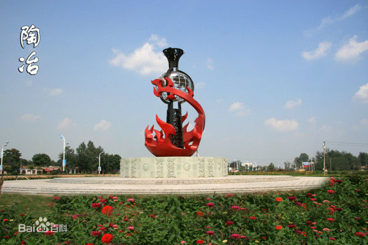

磁县古称磁州，是著名的中国磁州窑文化的发祥地。位于中原经济协作区中心地带，西依太行，北靠古赵，东临邺城，为晋、冀、鲁、豫四省通衢。磁县辖9个乡镇，地域面积1015平方公里，总人口65万（2013年）。地势西高东低，西部属太行山东麓，东部为山前冲积平原，山区、丘陵、平原各占三分之一。 磁县的旅游景点有鼓楼、贺兰山、河北纸马、磁州窑博物馆等旅游景点。盛产柿子、花椒、核桃、松花蛋等特产
磁县位于河北省南端漳河之滨，东113°53′-114°31′，北纬36°14′-36°35′之间。东与成安县、临漳县接壤；北部、西部分别与邯郸县、武安市、涉县和峰峰矿区相连接，南部和西南部分别与河南省安阳县、林州市毗邻。地形西高东低，自西向东渐次平缓，总面积1034.87平方公里。